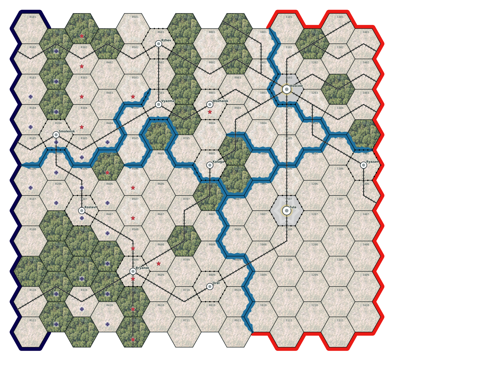
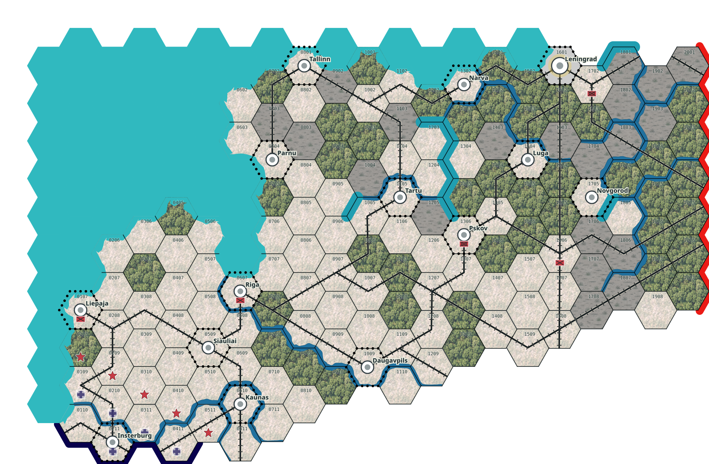
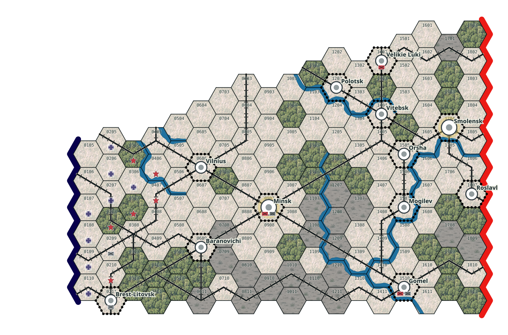
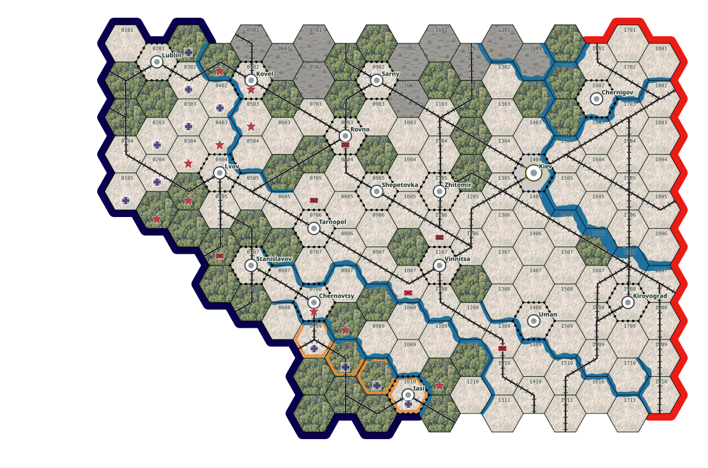
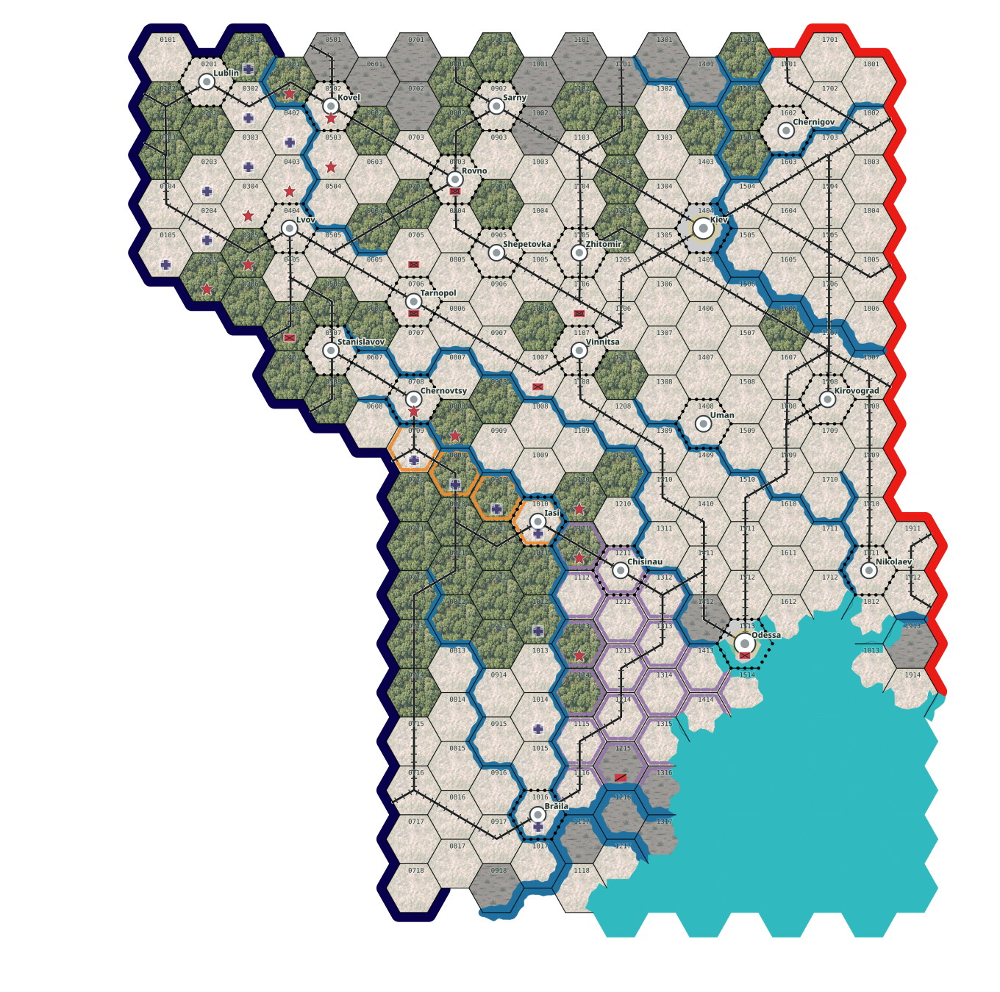

Battle for Moscow
Shared-native playable default

Engine-generated exports; no illustrative substitutes. Historical map presence does not imply playable scenario certification.
Shared-native playable default

Candidate setup; eight-turn browser acceptance verified

Map and opening transcribed; movement graph gated

Map available; gameplay not certified

Combined map; gameplay not certified
